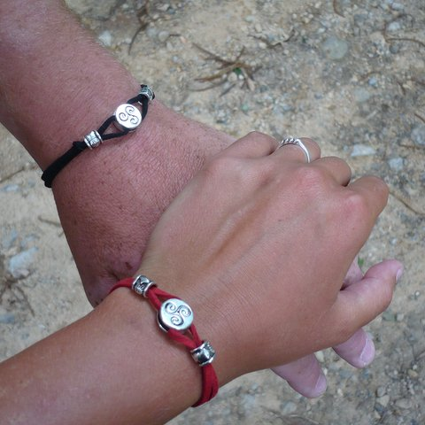

Fotogalerie
Fotíme se krajně neradi, ale přece... tady je pár našich společných fotek.



Vítejte na stránkách věnovaných naší svatbě,
kde se dozvíte další užitečné informace,
které se na svatební oznámení nevešly.
Zatím ještě nejsou úplně všechny, ale do začátku července to určitě napravíme. ;-)
Svatební obřad se mší svatou začíná ve 12.30 v klášterním kostele Nanebevzetí Panny Marie na Strahově.
Oddávat nás bude náš drahý přítel P. Miroslav Jindřich Zdík Jordánek, OPraem, jehož přízně si moc ceníme.
Pokud pojedete hromadnou dopravou, nejlépe se na místo dostanete tramvají č. 22. Ze zastávky Pohořelec k cíli snadno dojdete buď průchodem (schodištěm) v domě č. 8 na Pohořelci, nebo to můžete obejít přes rampu směrem k Dlabačovu, a ke klášteru tak přijdete hlavní branou (viz mapka).
V případě, že se chystáte přijet autem, můžete zaparkovat, bude-li volno, přímo v klášterním nádvoří, které je pro automobily přístupné hlavní klášterní branou po rampě z Dlabačova. (Pokud narazíte na patník čouhající ze země a červenou na semaforku, zazvoňte si na vrátnici zvonkem napravo na vnitřní straně brány.) A kdyby se náhodou stalo, že se zde pro vaše auto nezbude místo, nevadí: zdarma lze nejlépe parkovat ve velmi blízké Parléřově ulici, parkovací místa na Pohořelci jsou placená.
Bude nám ctí s vámi tuto událost také neokázale a decentně oslavit.
Bude k tomu příležitost od 16.30 do 23.00
v zimním refektáři Strahovského kláštera (viz pozvánka).
Dostanete se sem branou v křídle provisoriátu přes nádvoří rozprostírající se bezprostředně za klášterním kostelem, vstup dovnitř najdete u mírně vyvýšené tzv. cedrové zahrádky (tu poznáte podle jediného cedru, který se tam nachází ☺).
Budeme rádi, pokud svou účast na oslavě potvrdíte do konce července. Děkujeme Vám!
Fotíme se krajně neradi, ale přece... tady je pár našich společných fotek.
Možná to zní jako klišé, ale my to tak prostě máme: největším darem pro nás bude vaše účast na svatebním obřadu a následné oslavě.
Pokud nám ale přece chcete udělat radost něčím praktickým či hezkým a nejste si výběrem daru jisti, s důvěrou se můžete v této věci obrátit na našeho drahého bratrošvagra Václava (vaclav.pekarek@gmail.com, 728 325 146).
Jistě se nebudeme případně cítit uraženi či odbyti ani dary likvidnější povahy (čímž se nutně nemyslí fyzikální skupenství), které koneckonců bývají i těmi nejuniverzálnějšími.
Zkrátka, nedělejte si s tím velkou hlavu, hlavně dorazte – s úsměvem ve tváři, s veselím v mysli a s radostí v srdci!
Potvrzení účasti na svatební oslavě a případné dotazy či připomínky k svatbě posílejte přednostně na e-mailovou adresu svatba@annaadamian.cz
Se záležitostmi týkajícími se jen jedné naší polovičky lze psát na adresy a2na.pekarkova@gmail.com nebo faberda@email.cz.
Anna Pekárková